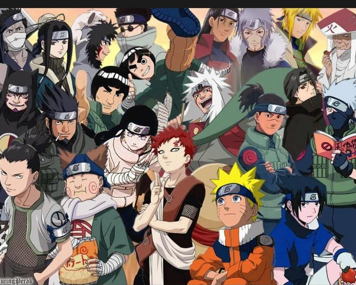
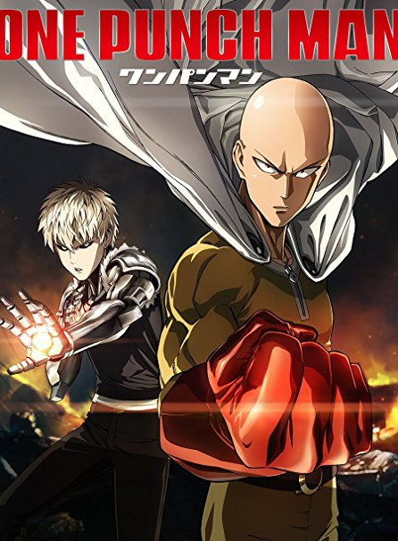

5: Naruto
Ratings : 🌟 7.9
English Name : Naruto
Genre :ActionAdventureComedyMartial ArtsShounen
Seasons : 5
Episodes : 220
Air-Date : 3-October-2002
Watch-Time : 24 min.(Per Ep.)
Synopsis:
Moments prior to Naruto Uzumaki's birth, a huge demon known as the Kyuubi(the Nine-Tailed Fox), attacked Konohagakure,
the Hidden Leaf Village, and wreaked havoc. In order to put an end to the Kyuubi's rampage, the leader of the village,
the Fourth Hokage, sacrificed his life and sealed the monstrous beast inside his newborn son Naruto.
Now, Naruto is a hyperactive and knuckle-headed ninja still living in Konohagakure. Shunned because of the Kyuubi inside
him, Naruto struggles to find his place in the village, while his burning desire to become the Hokage of Konohagakure leads
him not only to some great new friends, but also some deadly foes.
4: Shingeki No Kyojin

Ratings : 🌟 8.4
English Name : Attack On Titan
Genre : ActionMilitaryMysterySuper PowerDramaFantasy
Seasons : 4
Episodes : 25(Per Season)
Air-Date : 7-April-2013
Watch-Time : 24 min.(Per Ep.)
Synopsis:
Centuries ago, mankind was slaughtered to near extinction by monstrous humanoid creatures called titans, forcing humans to hide in fear behind enormous concentric walls. What makes these giants truly terrifying is that their taste for human flesh is not born out of hunger but what appears to be out of pleasure. To ensure their survival, the remnants of humanity began living within defensive barriers, resulting in one hundred years without a single titan encounter. However, that fragile calm is soon shattered when a colossal titan manages to breach the supposedly impregnable outer wall, reigniting the fight for survival against the man-eating abominations.
After witnessing a horrific personal loss at the hands of the invading creatures, Eren Yeager dedicates his life to their eradication by enlisting into the Survey Corps, an elite military unit that combats the merciless humanoids outside the protection of the walls. Based on Hajime Isayama's award-winning manga, Shingeki no Kyojin follows Eren, along with his adopted sister Mikasa Ackerman and his childhood friend Armin Arlert, as they join the brutal war against the titans and race to discover a way of defeating them before the last walls are breached.
3: Boku No Hero Academia

Ratings : 🌟 8.1
English Name : My Hero Academia
Genre : ActionShounenSuper Power
Seasons : 4
Episodes : 13(Per Season)
Air-Date : 3-April-2016
Watch-Time : 24 min.(Per Ep.)
Synopsis:
The appearance of "quirks," newly discovered super powers, has been steadily increasing over the years, with 80 percent of humanity possessing various abilities from manipulation of elements to shapeshifting. This leaves the remainder of the world completely powerless, and Izuku Midoriya is one such individual.
Since he was a child, the ambitious middle schooler has wanted nothing more than to be a hero. Izuku's unfair fate leaves him admiring heroes and taking notes on them whenever he can. But it seems that his persistence has borne some fruit: Izuku meets the number one hero and his personal idol, All Might. All Might's quirk is a unique ability that can be inherited, and he has chosen Izuku to be his successor!
Enduring many months of grueling training, Izuku enrolls in UA High, a prestigious high school famous for its excellent hero training program, and this year's freshmen look especially promising. With his bizarre but talented classmates and the looming threat of a villainous organization, Izuku will soon learn what it really means to be a hero.
2: One Punch Man: Wanpanman
Ratings : 🌟 8.6
English Name : One Punch Man
Genre : ActionSci-FiComedyParodySuper Power
Seasons : 2
Episodes : 12(Per Season)
Air-Date : 5-October-2015
Watch-Time : 24 min.(Per Ep.)
Synopsis:
The seemingly ordinary and unimpressive Saitama has a rather unique hobby: being a hero. In order to pursue his childhood dream, he trained relentlessly for three years—and lost all of his hair in the process. Now, Saitama is incredibly powerful, so much so that no enemy is able to defeat him in battle. In fact, all it takes to defeat evildoers with just one punch has led to an unexpected problem—he is no longer able to enjoy the thrill of battling and has become quite bored.
This all changes with the arrival of Genos, a 19-year-old cyborg, who wishes to be Saitama's disciple after seeing what he is capable of. Genos proposes that the two join the Hero Association in order to become certified heroes that will be recognized for their positive contributions to society, and Saitama, shocked that no one knows who he is, quickly agrees. And thus begins the story of One Punch Man, an action-comedy that follows an eccentric individual who longs to fight strong enemies that can hopefully give him the excitement he once felt and just maybe, he'll become popular in
1: Hagane no renkinjutsushi

Ratings : 🌟 9.2
English Name : Fullmetal Alchemist: Brotherhood
Genre : ActionAdventureComedyMilitaryMagicFantasy
Seasons : 1
Episodes : 64
Air-Date : 5-April-2009
Watch-Time : 24 min.(Per Ep.)
Synopsis:
"In order for something to be obtained, something of equal value must be lost."
Alchemy is bound by this Law of Equivalent Exchange—something the young brothers Edward and Alphonse Elric only realize after attempting human transmutation: the one forbidden act of alchemy. They pay a terrible price for their transgression—Edward loses his left leg, Alphonse his physical body. It is only by the desperate sacrifice of Edward's right arm that he is able to affix Alphonse's soul to a suit of armor. Devastated and alone, it is the hope that they would both eventually return to their original bodies that gives Edward the inspiration to obtain metal limbs called "automail" and become a state alchemist, the Fullmetal Alchemist.
Three years of searching later, the brothers seek the Philosopher's Stone, a mythical relic that allows an alchemist to overcome the Law of Equivalent Exchange. Even with military allies Colonel Roy Mustang, Lieutenant Riza Hawkeye, and Lieutenant Colonel Maes Hughes on their side, the brothers find themselves caught up in a nationwide conspiracy that leads them not only to the true nature of the elusive Philosopher's Stone, but their country's murky history as well. In between finding a serial killer and racing against time, Edward and Alphonse must ask themselves if what they are doing will make them human again... or take away their humanity.